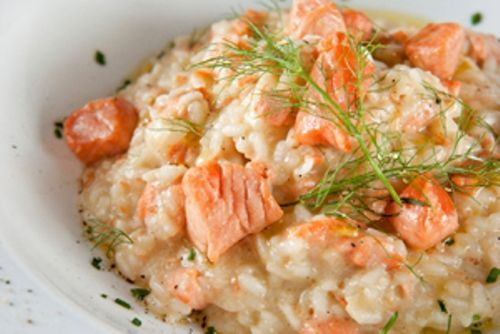

Risoto de Salmão
Ingredientes:
- 400 gramas de salmão em cubos
- 2 xícaras de arroz carnaroli ou arbóreo
- 1 cebola picada
- 1 xícara de queijo parmesão ralado
- 2 tabletes de caldo de legumes dissolvidos em 1,5 litro de água fervente
- Suco de 1/2 limão
- 1 xícara de vinho branco seco
- Sal a gosto
- 2 colheres de sopa de manteiga
Modo de Preparo:
Em uma frigideira, derreta metade da manteiga e frite os cubos de salmão com limão e sal e reserve. Na mesma panela, derreta o resto da manteiga e doure a cebola. Em seguida acrescente o arroz, o vinho branco e mexa até evaporar. Adicione o caldo de legumes reservado aos poucos, uma concha por vez, mexendo sempre, até o arroz ficar al dente. Assim que o arroz estiver pronto, coloque o sal, acrescente o salmão e o queijo. Mexa bem e sirva quente.